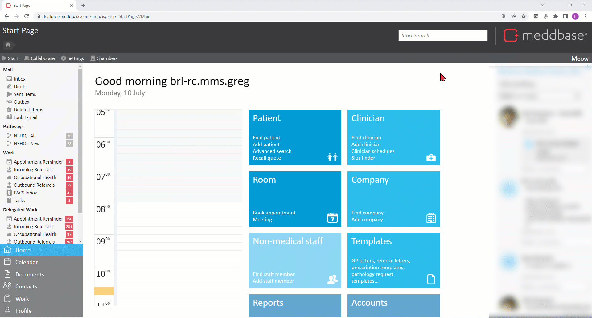
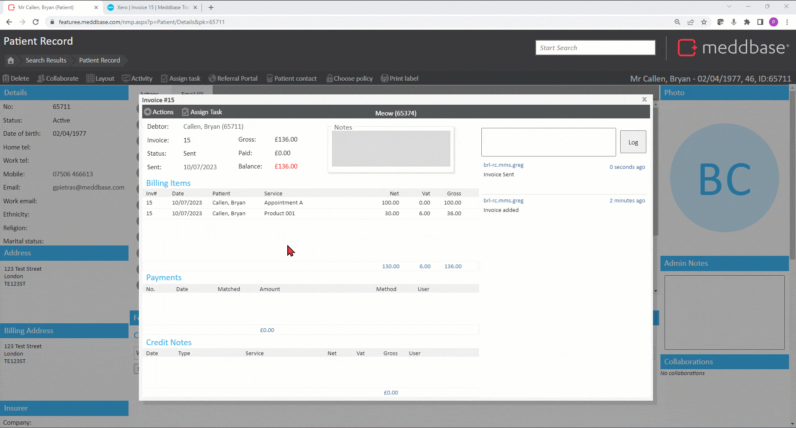
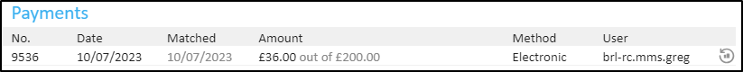
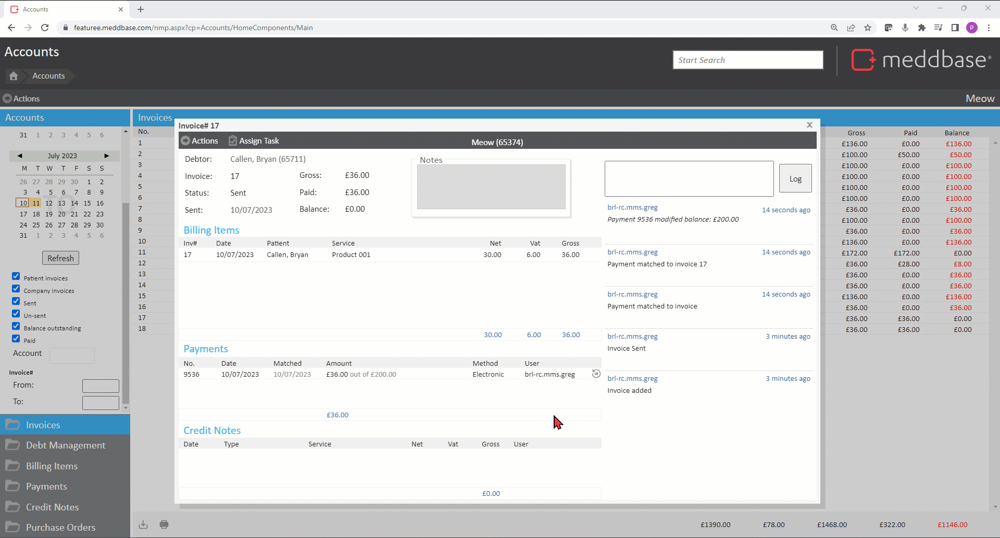
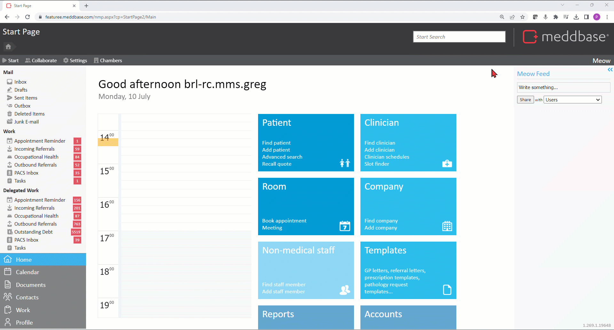
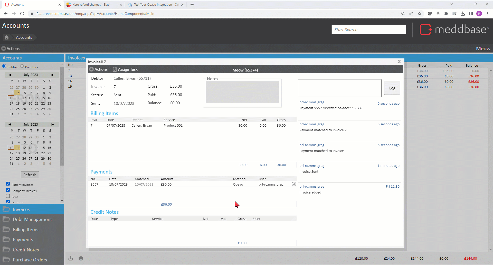

Xero’s online accounting software connects small business owners with their numbers, their bank, and advisors anytime.
Before this feature was introduced, a payment made in Meddbase created a Prepayment in Xero with an automatic credit allocation to the respective invoice. Allocated credits could not be refunded.
The feature described below utilises the concept of Payments in Xero. Payments can be refunded.
MMS must take action before you will be able to enable this feature in your Meddbase chamber. Please speak with your Account Manager, or reach out to the Client Account Management Team on accountmanagement@meddbase.com
This article will walk you through refunding payments on and outside an invoice in Meddbase and how Meddbase communicates with Xero. The following topic will be covered:
Click here for a full list of the actions you can take on an invoice in Meddbase.
Click here for an article on generating invoice, marking as 'sent', making payment.
Click here for an article on raising a credit note and short falling a payment.
To enable Refunds in your chamber:-

When the Xero integration is in use and the Enable match refunds and Matches use Xero payments checkboxes are ticked, a payment made on a sent invoice in Meddbase is allocated to the invoice in Xero as a Payment (as opposed to a Prepayment credit allocation), which means it can be refunded.

Once the payment is made it will appear on the invoice under the Payments section.
The simplest way to refund the payment is:
*When an invoice is raised in Meddbase, the outstanding balance is shown in red representing a negative amount. Payments reduce that amount, representing bringing the negative amount up to 0. In Xero, the invoice balance is presented as a positive amount, that is reduced with payments. Therefore, a refund of a payment reduces the balance in Meddbase and increases it in Xero.
The refund will now be added as a line in the Payments section of the invoice and the balance will be amended both in Meddbase and in Xero.
A full or part of an advance payment in Meddbase can be used to pay an invoice or multiple invoices at once.
An advance payment can be made:
You can therefore refund an advance payment matched to one or multiple invoices simultaneously. You can also refund the unmatched part of the payment if it was not matched to invoices in its entirety.
You can do so in 2 ways.
When an advance payment, e.g. £200, has been used to match to an invoice or multiple invoices with a balance of, e.g. £36, the payment will be added to the Payments section of that invoice as:

You can refund this individual match by using the refund button at the end of the payment line (as described earlier).
You can also refund this match and all other matches the advance payment was used for. You can also refund the unmatched part of the payment.
To do this:

You can refund the unmatched portion of an advance payment and all matches the payment was used for from the Accounts section.
To do this:

The process of refunding a payment made via the Opayo Gateway is the same as refunding any other payment.
The difference from the user perspective is in the Confirmation pop-up informing you that refunds cannot be deleted and the invoice(s) balance(s) will be reduced by the refund amount(s).
For online payment refunds the pop-up also informs you that there will be a payment request made to Opayo for the respective amount. Opayo will process the refund according to their refund policy.
